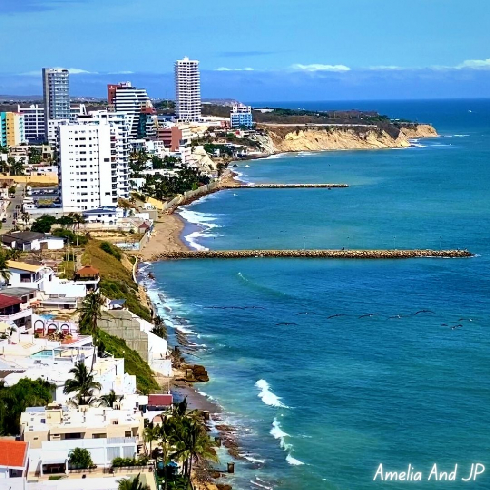
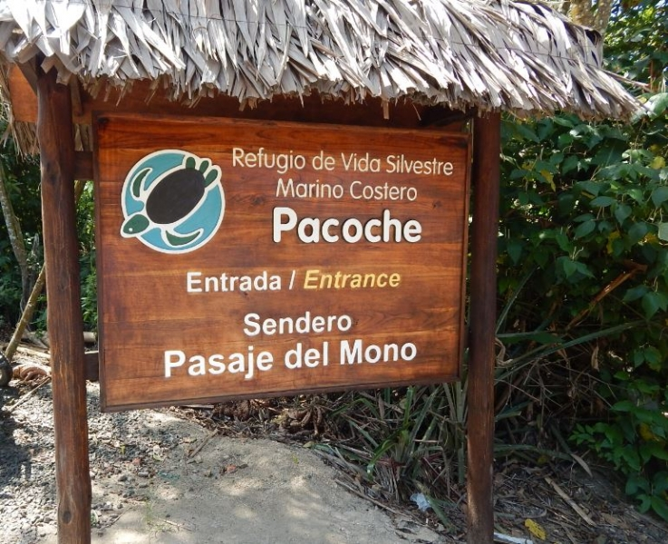
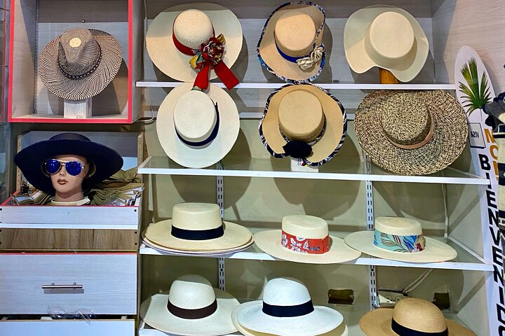

About Manta
Area
km²
Population
res.
Male Population
%
Female Population
%
Manta

Manta, also known as San Pablo de Manta, is a city in Ecuador, cantonal head of the Manta Canton, as well as the largest and most populated city in the Manabí Province. It is the tenth most populous in the country.
Manta has existed since Pre-Columbian times. It was a trading post for the Manta, also known as Manteños.
Pacoche - The Rain Forest

Visit Pacoche Wildlife Refuge to see famous local animals such as howler monkeys, see a local button factory, witness artisans weaving a fine Montecristi hat, stop by the Ciudad Alfaro museum, and more.
This is a great chance to expose yourself to a whole range of Ecuadorian culture and history.
Montecristi - Panama Hat

Did you know that the famous Panama Hat is originally from Ecuador?
A Panama hat, also known as an Ecuadorian hat, a Jipijapa hat, or a toquilla straw hat, is a traditional brimmed straw hat of Ecuadorian origin. Source: Wikipedia
Learn about the iconic Panama hat at the Alfaro City Civic Center and visit a local hat maker to see how they are made.
Pacoche - The Rain Forest
Visit Pacoche Wildlife Refuge to see famous local animals such as howler monkeys, see a local button factory, witness artisans weaving a fine Montecristi hat, stop by the Ciudad Alfaro museum, and more.
Visit Pacoche Wildlife Refuge to see famous local animals such as howler monkeys, see a local button factory, witness artisans weaving a fine Montecristi hat, stop by the Ciudad Alfaro museum, and more.
Pacoche - The Rain Forest
Visit Pacoche Wildlife Refuge to see famous local animals such as howler monkeys, see a local button factory, witness artisans weaving a fine Montecristi hat, stop by the Ciudad Alfaro museum, and more.
This is a great chance to expose yourself to a whole range of Ecuadorian culture and history.
Pacoche - The Rain Forest
Visit Pacoche Wildlife Refuge to see famous local animals such as howler monkeys, see a local button factory, witness artisans weaving a fine Montecristi hat, stop by the Ciudad Alfaro museum, and more.
This is a great chance to expose yourself to a whole range of Ecuadorian culture and history.